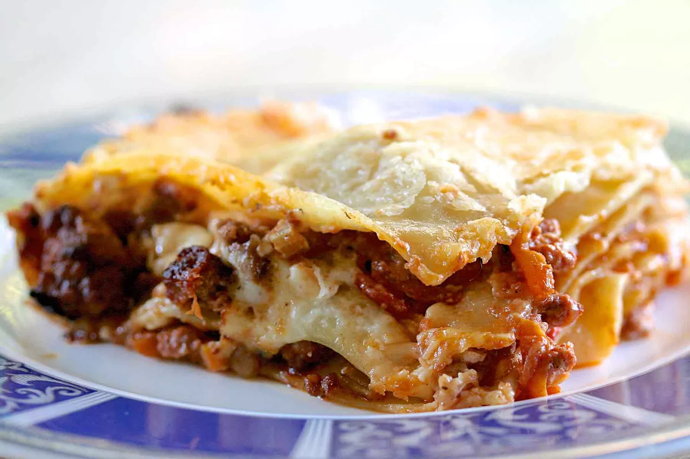

Classic Lasagna Bolognese

Description
The BEST Lasagna Bolognese! Layers of flat lasagna noodles baked with alternating layers of slow-cooked Bolognese sauce, bechamel, and Parmesan cheese.
Ingredients (Lasagna + Bolognese & Béchamel Sauce)
- 2 ounces diced pancetta
- 1 medium Spanish or yellow onion
- 1 rib celery
- 1 carrot
- 4 tablespoons unsalted butter
- 11 ounces ground beef
- 4 ounces ground pork
- 4 ounces ground Italian sausage
- 1 freshly grounded clove
- Dash freshly ground cinnamon
- 1 teaspoon freshly ground black pepper
- 2 pounds peeled and chopped tomatoes or 1 can whole peeled tomatoes
- 1 cup whole milk
- 1/2 teaspoon sea salt
- 2 cups whole milk
- 1/4 cup unsalted butter
- 1/4 cup all-purpose flour
- About 16 sheets lasagna noodles
- 1 cup freshly grated Parmesan cheese
Preparing Bolognese Sauce
Make Soffritto
- Combine pancetta, onion, celery, and carrot in sauté pan with butter and cook over medium heat until onion turns pale gold.
- Add the beef, pork, and sausage to the soffritto and increase the heat to high. Cook until browned. Sprinkle with the ground clove, cinnamon, and pepper.
- Stir in the tomatoes and bring to a simmer. Reduce the heat to medium. Cook over medium heat for 15 minutes. If you are using whole canned tomatoes, break them up as you add them to the sauce.
- Add the milk, season with sea salt, then turn down the heat and let simmer for 2 and 1/2 hours. Stir at least every 20 minutes. Whenever the sauce simmers down to the point that it is sticking to the bottom of the pan, just add 1/4 cup of water and scrape up the browned bits from the bottom and continue to cook.
Béchamel Sauce
Make roux
- Heat the milk until almost boiling in a heavy bottomed sauce pan. In a separate pan melt the unsalted butter with the flour over low heat. Stir rapidly with a spoon. Cook this for 1 minute and then remove from the heat.
- Slowly add half the hot milk to your butter and flour mixture. During this process stir constantly.
- Return the milk, butter, flour mixture to low heat until the sauce begins to thicken. Add the remaining milk slowly while stirring working it into the thickened sauce. Continue to stir until it comes to a boil.
- Season with some sea salt, and continue stirring until the right consistency has developed. If any lumps form, beat them out rapidly with a whisk until they dissolve. Remove from heat.
Preparing Lasagna
Cook lasagna noodles
- Preheat oven to 375°F. Cook the lasagna according to instructions. About 8 minutes in 6 quarts of boiling salted water. Drain, rinse with cold water. Lay the individual lasagna noodles out on kitchen towels, not touching, so they do not stick together while you layer the casserole.
- Spread a little olive oil around the inside of a 13x9-inch baking pan. Make sure your baking pan is non-reactive - pyrex or stainless steel. Do not use an aluminum pan as it will react with the acidity of the sauce and ruin the flavor. Put a layer of lasagna noodles down first. Layer on a third of the bolognese sauce, then a third of the bechamel sauce. Sprinkle with grated Parmesan. Repeat two more times. Top with a final layer of noodles and sprinkle with grated Parmesan.
- Tent the casserole with aluminum foil. Put lasagna into the middle rack of a pre-heated 375°F oven. Bake for 20-30 minutes, until the top begins to get lightly browned. Remove from oven and let cool 5-10 minutes before serving.